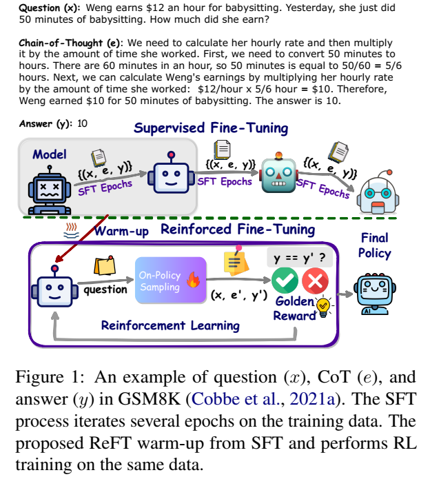
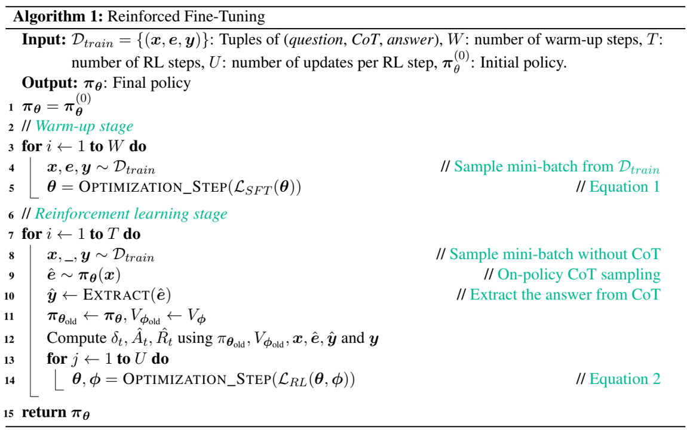

论文阅读五十一：ReFT：强化微调推理
摘要
增强大型语言模型（LLMs）推理能力的一种方式是使用思想连（CoT）注释执行有监督微调（SFT）。然而，该方式不能展示足够强的泛化能力，因为训练仅依赖于给定的CoT数据。在数学问题求解中，例如，在训练数据中每个问题仅有一个注释的推理路径。直观上，算法最好从来自给定问题的多个注释推理路径上学习。为了解决这个问题，我们提出一个简单但有效的方式，称为强化微调（ReFT）来增强学习的LLMs进行推理的泛化能力，使用数学问题求解作为示例。ReFT首先使用SFT预热模型，然后使用在线强化学习，本文中指定为PPO算法，来进一步微调模型，其中，给定问题，会自动采样大量推理路径，并且奖励自然地来自真实答案。在GSM8K、MathQA和SVAMP数据集上进行的广泛实验表明，ReFT的表现明显优于SFT，通过结合多数投票和重新排名等推理时间策略，可以进一步提高性能。请注意，ReFT通过从与SFT相同的训练问题中学习来获得改进，而不依赖于额外的或增强的训练问题。这表明ReFT具有更强的泛化能力。论文地址 代码
引言
解决数学问题的最先进方法（Luo等人，2023；Wang等人，2023a）采用监督微调（SFT）来使用思维链（CoT）注释训练模型（Wei等人，2022）。如图1所示，CoT注释概述了解决数学问题的中间推理步骤。

通常训练数据中，每个问题由一个CoT注释，即，一条正确的推理路径，在SFT中利用。我们观察到，这可能导致SFT模型相对弱的泛化能力。它常常是同样的问题存在多个有效CoT注释的情况，强调了需要更加强大的微调方法。为了解决这个问题，我们提出一个简单但有效的方式，称为强化微调（ReFT）（图1底部）。
ReFT开始于涉及一两个回合的监督微调（SFT）的预热阶段（图1，阴影框）。该初始阶段使模型具备一定程度地生成数学问题正确回复的能力，如先前工作所证明（Cobbe等，2021a）。接下来，ReFT 通过利用在线强化学习 (RL) 算法 (Sutton and Barto, 2018)，特别是本文中的近端策略优化 (PPO) (Schulman et al., 2017) 进一步完善模型。通过这种方式，ReFT能够对多个正确的推理路径或CoT注释进行采样，并从中学习（图2，右）。
由于训练数据包含真实答案，因此在训练 PPO 时可以自然地从中得出黄金奖励。因此，不需要单独训练奖励模型。相比之下，RLHF（Ouyang 等人，2022 年）必须使用从人工标记数据中学习到的奖励模型。
在预热阶段，ReFT 通过监督学习获得一定的准确率。在强化学习阶段，ReFT 通过对各种 CoT 推理路径进行采样，通过强化学习进一步增强其能力。这样，ReFT 获得的监督信号比 SFT 丰富得多。这种方法使 ReFT 能够大大提高数学问题解决的泛化能力（Gao et al.，2018；Brown et al.，2020）。请注意，ReFT 通过使用相同的训练问题，而不依赖额外或增强的训练问题，其表现优于 SFT。事实上，ReFT 与这种数据工程并不冲突，可以与之无缝结合。
我们的贡献如下：
- 我们介绍了一种新的微调方法，即强化微调（ReFT），它利用强化学习来解决数学问题。当在相同的数据集上训练时，与传统的监督微调相比，ReFT表现出更强的泛化能力。
- 我们使用两个基础模型CodeLLAMA（Roziere等人，2023）和Galactica（Taylor等人，2022）在三个标准数据集上进行了广泛的实验：GSM8K（Cobbe等人，2021a）、MathQA（Amini等人，2019）和SVAMP（Patel等人，2021）。我们的实验涵盖了自然语言和基于程序的 CoT，证明了 ReFT 的性能和泛化能力的显著提升。
- 此外，我们证明了ReFT在推理时受益于多数投票（Wang等人，2023b）和奖励模型重新排序（Uesato等人，2022），从而进一步提高了其性能。
相关工作
数学问题求解 最近的研究工作集中在CoT快速设计和数据工程上。他们中的大多数人试图使CoT变得全面和细粒度，以逐步呈现推理解决方案（Nye等人，2021；Fu等人，2023；Zhou等人，2023b；Khot等人，2023年；Zelikman等人，2022；Imani等人，2023）。Gao等人（2023）进一步提出使用Python程序作为CoT提示，展示了比自然语言CoT更准确的推理步骤和显著改进（Wei等人，2022）。Zhou等人（2023a）介绍了一种提示方法，该方法生成代码以验证GPT-4（OpenAI，2023）的中间推理步骤，从而在GSM8K（Cobbe等人，2021a）和MATH（Hendrycks等人，2021）上实现了最先进的性能。另一项工作侧重于提高CoT的质量（Wang等人，2023a；Liu等人，2023；Yu等人，2023），并增加OpenAI的ChatGPT（gpt-3.5-turbo）或gpt-4的CoT数据量（Luo等人，2023，Yue等人，2023年）。
强化学习 我们的工作主要与最近将PPO（Schulman等人，2017）应用于自然语言过程以调整人类偏好的工作有关（欧阳等人，2022）。从那时起，已经提出了几种训练算法来有效地改善对齐，包括直接偏好优化（DPO）（Rafailov等人，2023）、身份偏好优化（IPO）（Azar等人，2023年）和Kahneman Tversky优化（KTO）（Ethayarajh等人，2023。除了对齐的目的外，我们的目标是采用强化学习作为微调范式，以提高传统监督微调的性能。
具体来说，为了解决数学问题，Uesato 等人 (2022) 和 Lightman 等人 (2023) 训练了一个基于结果或基于过程的奖励模型来执行重新排序 (Cobbe 等人，2021a)，从而实现了比 SFT 和多数投票 (Wang 等人，2023b) 更好的性能。虽然我们的方法旨在提高策略本身的性能，但这些奖励模型重新排序方法可以轻松集成到最终的策略模型中。
方法
在这项工作中，我们专注于使用Python的自然语言CoT（N-CoT）（Wei等人，2022）（图1）和基于程序的CoT（Gao等人，2023）（P-IoT）。Gao等人（2023）提出了基于程序的CoT来解决数学问题。我们可以简单地执行程序来获得答案。为了确保清晰性并避免歧义，我们分别使用术语N-CoT和P-CoT来表示自然语言和基于程序的CoT。
强化微调

所提出的强化微调（ReFT）过程包括两个阶段：预热阶段和强化学习阶段。整体算法如算法1所示。
预热 在这个阶段，该策略在由“（问题，CoT）”元组（x，e）组成的数据集上进行了几个回合的微调。它使模型具有基本的解决问题的能力，以生成适当的响应。从形式上讲，CoT生成过程可以分解为一系列下一个标记预测动作。最后一个动作标记 表示生成过程终止。CoT e写作如下：
其中L表示最大长度。在时间步t，动作 采样自策略 ，其中 可以是词汇表中的任何标记，状态 包括问题中的所有标记和迄今为止生成的所有标记。在每个动作之后，得到的状态 是当前状态 和动作 在以下位置的拼接：
由于产生的动作是 标记，因此生成的状态 是终止状态，生成过程结束。使用这种符号，样本的损失函数可以写成：
强化学习 在这个阶段，该策略通过使用由（问题，答案）元组：（x，y）组成的数据集进行在线自学习来提高其性能。具体来说，策略模型通过反复采样响应（图2）、评估响应的答案正确性并以在线方式更新其参数来学习（算法1中的第7-14行）。我们采用PPO（Schulman等人，2017）和截断目标算法进行训练。根据Ziegler等人（2019）的研究，价值模型 是通过在预热阶段后的策略模型 的最后隐藏状态上附加一个线性值头来构建的。对于所有导致非终止状态的操作，奖励为0。在终止状态，我们使用一个奖励函数，直接比较从该状态的CoT中提取的答案和地面真实答案y。这里，如果答案被认为是正确的，则奖励函数返回1，否则返回0。在答案都是数字的数据集上，当答案可以提取并且是数字类型时，可以应用0.1的部分奖励（Zhong等人，2017；Le等人，2022）。对于 ，我们写作
这种部分奖励可以帮助减少从稀疏奖励中学习的影响（Riedmiller等人，2018；Trott等人，2019）。此外，根据Zheng等人（2023）的研究，我们的总奖励是奖励函数得分, 与学习的RL策略和初始策略之间的Kullback-Leibler（KL）散度之和（Kullback和Leibler，1951），该散度由系数因子 缩放。
广义优势估计（Schulman等人，2018）用于优势计算：
其中，时序差分（TD）定义为
终止状态值 ， 是奖励的折扣因子， 是TD的折扣因子。为了估计回报，我们利用 ，可以写为广义优势估计和值估计之和：
最后，策略和值目标可以写为如下两个方程：
其中， 用于采样CoT和计算 。
统一损失函数是上述目标的加权和。
其中 是值目标的系数。